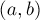

MAXimal
добавлено: 2 Mar 2009 17:45
редактировано: 24 Aug 2011 12:11
Содержание [скрыть]
Нахождение всех граней, внешней грани планарного графа
Дан планарный, уложенный на плоскости граф  с
с  вершинами. Требуется найти все его грани. Гранью называется часть плоскости, ограниченная рёбрами этого графа.
вершинами. Требуется найти все его грани. Гранью называется часть плоскости, ограниченная рёбрами этого графа.
Одна из граней будет отличаться от остальных тем, что будет иметь бесконечную площадь, такая грань называется внешней гранью. В некоторых задачах требуется находить только внешнюю грань, алгоритм нахождения которой, как мы увидим, по сути ничем не отличается от алгоритма для всех граней.
Теорема Эйлера
Приведём здесь теорему Эйлера и несколько следствий из неё, из которых будет следовать, что число рёбер и граней планарного простого (без петель и кратных рёбер) графа являются величинами порядка  .
.
Пусть планарный граф является связным. Обозначим через число вершин в графе,  — число рёбер,
— число рёбер,  — число граней. Тогда справедлива теорема Эйлера:
— число граней. Тогда справедлива теорема Эйлера:
 не изменится. Будем повторять этот процесс, пока не придём к дереву, для которого тождество уже установлено. Таким образом, теорема доказана.
не изменится. Будем повторять этот процесс, пока не придём к дереву, для которого тождество уже установлено. Таким образом, теорема доказана.Следствие. Для произвольного планарного графа пусть  — количество компонент связности. Тогда выполняется:
— количество компонент связности. Тогда выполняется:
Следствие. Число рёбер простого планарного графа является величиной .
Доказательство. Пусть граф является связным и  (в случае утверждение получаем автоматически). Тогда, с одной стороны, каждая грань ограничена как минимум тремя рёбрами. С другой стороны, каждое ребро ограничивает максимум две грани. Следовательно, , откуда, подставляя это в формулу Эйлера, получаем:
(в случае утверждение получаем автоматически). Тогда, с одной стороны, каждая грань ограничена как минимум тремя рёбрами. С другой стороны, каждое ребро ограничивает максимум две грани. Следовательно, , откуда, подставляя это в формулу Эйлера, получаем:
Если граф не является связным, то, суммируя полученные оценки по его компонентам связности, снова получаем , что и требовалось доказать.
Следствие. Число граней простого планарного графа является величиной .
Это следствие вытекает из предыдущего следствия и связи .
Обход всех граней
Всегда будем считать, что граф, если он не является связным, уложен на плоскости таким образом, что никакая компонента связности не лежит внутри другой (например, квадрат с лежащим строго внутри него отрезком — некорректный для нашего алгоритма тест).
Разумеется, считается, что граф корректно уложен на плоскости, т.е. никакие две вершины не совпадают, а рёбра не пересекаются в "несанкционированных" точках. Если во входном графе допускаются такие пересекающиеся рёбра, то предварительно надо избавиться от них, вводя в каждую точку пересечения дополнительную вершину (надо заметить, что в результате этого процесса вместо точек мы можем получить порядка точек). Более подробно об этом процессе см. ниже в соответствующем разделе.
Пусть для каждой вершины все исходящие из неё рёбра упорядочены по полярному углу. Если это не так, то их следует упорядочить, произведя сортировку каждого списка смежности (т.к. , на это потребуется  операций).
операций).
Теперь выберем произвольное ребро  и пустим следующий обход. Приходя в какую-то вершину  по некоторому ребру, выходить из этой вершины мы обязательно должны по следующему в порядке сортировки ребру.
по некоторому ребру, выходить из этой вершины мы обязательно должны по следующему в порядке сортировки ребру.
Например, на первом шаге мы находимся в вершине  , и должны найти вершину
, и должны найти вершину  в списке смежности вершины , тогда обозначим через
в списке смежности вершины , тогда обозначим через  следующую вершину в списке смежности (если была последней, то в качестве возьмём первую вершину), и пройдём по ребру .
следующую вершину в списке смежности (если была последней, то в качестве возьмём первую вершину), и пройдём по ребру .
Повторяя этот процесс много раз, мы рано или поздно придём обратно к стартовому ребру , после чего надо остановиться. Нетрудно заметить, что при таком обходе мы обойдём ровно одну грань. Причём направление обхода будет против часовой стрелки для внешней грани, и по часовой стрелке — для внутренних граней. Иными словами, при таком обходе внутренность грани будет всегда по правую сторону от текущего ребра.
Итак, мы научились обходить одну грань, стартуя с любого ребра на её границе. Осталось научиться выбирать стартовые рёбра таким образом, чтобы получаемые грани не повторялись. Заметим, что у каждого ребра различаются два направления, в которых его можно обходить: при каждом из них будут получаться свои грани. С другой стороны, ясно, что одно такое ориентированное ребро принадлежит ровно одной грани. Таким образом, если мы будет помечать все рёбра каждой обнаруженной грани в некотором массиве  , и не запускать обход из уже помеченных рёбер, то мы обойдём все грани (включая внешнюю), притом ровно по одному разу.
, и не запускать обход из уже помеченных рёбер, то мы обойдём все грани (включая внешнюю), притом ровно по одному разу.
Приведём сразу реализацию этого обхода. Будем считать, что в графе списки смежности уже упорядочены по углу, а кратные рёбра и петли отсутствуют.
Первый вариант реализации упрощённый, следующую вершину в списке смежности он ищет простым поиском. Такая реализация теоретически работает за  , хотя на практике на многих тестах она работает весьма быстро (со скрытой константой, значительно меньшей единицы).
, хотя на практике на многих тестах она работает весьма быстро (со скрытой константой, значительно меньшей единицы).
int n; // число вершин vector < vector<int> > g; // граф vector < vector<char> > used (n); for (int i=0; i<n; ++i) used[i].resize (g[i].size()); for (int i=0; i<n; ++i) for (size_t j=0; j<g[i].size(); ++j) if (!used[i][j]) { used[i][j] = true; int v = g[i][j], pv = i; vector<int> facet; for (;;) { facet.push_back (v); vector<int>::iterator it = find (g[v].begin(), g[v].end(), pv); if (++it == g[v].end()) it = g[v].begin(); if (used[v][it-g[v].begin()]) break; used[v][it-g[v].begin()] = true; pv = v, v = *it; } ... вывод facet - текущей грани ... }
Другой, более оптимизированный вариант реализации — пользуется тем, что вершине в списке смежности упорядочены по углу. Если реализовать функцию сравнения двух точек по полярному углу относительно третьей точки (например, оформив её в виде класса, как в примере ниже), то при поиске точки в списке смежности можно воспользоваться бинарным поиском. В результате получаем реализацию за  .
.
class cmp_ang { int center; public: cmp_ang (int center) : center(center) { } bool operator() (int a, int b) const { ... должна возвращать true, если точка a имеет меньший чем b полярный угол относительно center ... } }; int n; // число вершин vector < vector<int> > g; // граф vector < vector<char> > used (n); for (int i=0; i<n; ++i) used[i].resize (g[i].size()); for (int i=0; i<n; ++i) for (size_t j=0; j<g[i].size(); ++j) if (!used[i][j]) { used[i][j] = true; int v = g[i][j], pv = i; vector<int> facet; for (;;) { facet.push_back (v); vector<int>::iterator it = lower_bound (g[v].begin(), g[v].end(), pv, cmp_ang(v)); if (++it == g[v].end()) it = g[v].begin(); if (used[v][it-g[v].begin()]) break; used[v][it-g[v].begin()] = true; pv = v, v = *it; } ... вывод facet - текущей грани ... }
Возможен и вариант, основанный на контейнере , ведь нам нужно всего лишь быстро узнавать позиции чисел в массиве. Разумеется, такая реализация также будет работать .
Следует отметить, что алгоритм не совсем корректно работает с изолированными вершинами — такие вершины он просто не обнаружит как отдельные грани, хотя, с математической точки зрения, они должны представлять собой отдельные компоненты связности и грани.
Кроме того, особой гранью является внешняя грань. Как её отличать от "обычных" граней, описано в следующем разделе. Следует заметить, что если граф является не связным, то внешняя грань будет состоять из нескольких контуров, и каждый из этих контуров будет найден алгоритмом отдельно.
Выделение внешней грани
Приведённый выше код выводит все грани, не делая различия между внешней гранью и внутренними гранями. На практике обычно, наоборот, требуется найти или только внешнюю грань, или только внутренние. Есть несколько приёмов выделения внешней грани.
Например, её можно определять по площади — внешняя грань должна иметь наибольшую площадь (следует только учесть, что внутренняя грань может иметь ту же площадь, что и внешняя). Этот способ не будет работать, если данный планарный граф не является связным.
Другой, более надёжный критерий — по направлению обхода. Как уже отмечалось выше, все грани, кроме внешней, обходятся в направлении по часовой стрелки. Внешняя грань, даже если она состоит из нескольких контуров, обойдётся алгоритмом против часовой стрелки. Определить направление обхода можно, просто посчитав знаковую площадь многоугольника. Площадь можно считать прямо по ходу внутреннего цикла. Однако и у этого метода есть своя тонкость — обработка граней нулевой площади. Например, если граф состоит из единственного ребра, то алгоритм найдёт единственную грань, площадь которой будет нулевой. По-видимому, если грань имеет нулевую площадь, то она является внешней гранью.
В некоторых случаях бывает применим и такой критерий, как количество вершин. Например, если граф представляет собой выпуклый многоугольник с проведёнными в нём непересекающимися диагоналями, то его внешняя грань будет содержать все вершины. Но снова надо быть аккуратным со случаем, когда и внешняя, и внутренняя грани имеют одинаковое число вершин.
Наконец есть и следующий метод нахождения внешней грани: можно специально запуститься от такого ребра, что найденная в результате грань будет внешней. Например, можно взять самую левую вершину (если таких несколько, то подойдёт любая) и выбрать из неё ребро, идущее первым в порядке сортировки. В результате обход из этого ребра найдёт внешнюю грань. Этот способ можно распространить и на случай несвязного графа: нужно в каждой компоненте связности найти самую левую вершину и запускать обход из первого ребра из неё.
Приведём реализацию самого простого метода, основанного на знаке площади (сам обход я для примера взял за , здесь это неважно). Если граф не связный, то код "... грань является внешней ..." выполнится отдельно для каждого контура, составляющего внешнюю грань.
... обычный код по обнаружению граней ... ... сразу после цикла, обнаруживающего очередную грань: ... // считаем площадь double area = 0; // добавляем фиктивную точку для простоты подсчёта площади facet.push_back (facet[0]); for (size_t k=0; k+1<facet.size(); ++k) area += (p[facet[k]].first + p[facet[k+1]].first) * (p[facet[k]].second - p[facet[k+1]].second); if (area < EPS) ... грань является внешней ... }
Построение планарного графа
Для вышеописанных алгоритмов существенно то, что входной граф является корректно уложенным планарным графом. Однако на практике часто на вход программе подаётся набор отрезков, возможно, пересекающихся между собой в "несанкционированных" точках, и нужно по этим отрезкам построить планарный граф.
Реализовать построение планарного графа можно следующим образом. Зафиксируем какой-либо входной отрезок. Теперь пересечём этот отрезок со всеми остальными отрезками. Найденные точки пересечения, а также концы самого отрезка положим в вектор, и его отсортируем стандартным образом (т.е. сначала по одной координате, при равенстве — по другой). Потом пройдёмся по этому вектору и будет добавлять рёбра между соседними в этом векторе точками (разумеется, следя, чтобы мы не добавили петли). Выполнив этот процесс для всех отрезков, т.е. за , мы построим соответствующий планарный граф (в котором будет точек).
Реализация:
const double EPS = 1E-9; struct point { double x, y; bool operator< (const point & p) const { return x < p.x - EPS || abs (x - p.x) < EPS && y < p.y - EPS; } }; map<point,int> ids; vector<point> p; vector < vector<int> > g; int get_point_id (point pt) { if (!ids.count(pt)) { ids[pt] = (int)p.size(); p.push_back (pt); g.resize (g.size() + 1); } return ids[p]; } void intersect (pair<point,point> a, pair<point,point> b, vector<point> & res) { ... стандартная процедура, пересекает два отрезка a и b и закидывает результат в res ... ... если отрезки перекрываются, то закидывает те концы, которые попали внутрь первого отрезка ... } int main() { // входные данные int m; vector < pair<point,point> > a (m); ... чтение ... // построение графа for (int i=0; i<m; ++i) { vector<point> cur; for (int j=0; j<m; ++j) intersect (a[i], a[j], cur); sort (cur.begin(), cur.end()); for (size_t j=0; j+1<cur.size(); ++j) { int x = get_id (cur[j]), y = get_id (cur[j+1]); if (x != y) { g[x].push_back (y); g[y].push_back (x); } } } int n = (int) g.size(); // сортировка по углу и удаление кратных рёбер for (int i=0; i<n; ++i) { sort (g[i].begin(), g[i].end(), cmp_ang (i)); g[i].erase (unique (g[i].begin(), g[i].end()), g[i].end()); } }